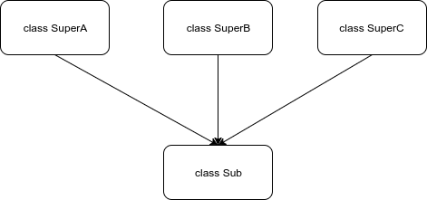
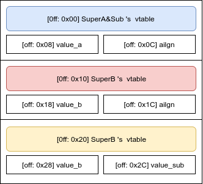

<!DOCTYPE HTML>
<html lang="zh-CN">
<head>

  
<script async src="https://www.googletagmanager.com/gtag/js?id=UA-146336292-1"></script>
<script>
  window.dataLayer = window.dataLayer || [];
  function gtag(){dataLayer.push(arguments);}
  gtag('js', new Date());

  gtag('config', 'UA-146336292-1');
</script>

  <meta charset="UTF-8">
  <title>ARMv8代码定式 - pkiller</title>
  <meta name="viewport" content="width=device-width, initial-scale=1, maximum-scale=3, minimum-scale=1">
  <meta name="keywords" content="arm,android,逆向,汇编,">
  <meta name="description" content="本文案例默认编译自android-ndk-r10d, 并且编译选项的均为: APP_OPTIM := release OPT_CFLAGS := -O2&quot; 若为其它ndk环境将会在小节开头处有特殊说明. 一. 成员函">
  
  <meta itemprop="name" content="ARMv8代码定式 - pkiller">
  <meta itemprop="description" content="本文案例默认编译自android-ndk-r10d, 并且编译选项的均为: APP_OPTIM := release OPT_CFLAGS := -O2&quot; 若为其它ndk环境将会在小节开头处有特殊说明. 一. 成员函">
  <meta itemprop="image" content="https://pkiller.com/img/author.jpg">
  
  
  <meta name="twitter:description" content="">
  
  <link rel="shortcut icon" href="https://pkiller.com/img/favicon.ico"/>
  <link rel="apple-touch-icon" href="https://pkiller.com/apple-touch-icon.png" />
  <link rel="apple-touch-icon-precomposed" href="https://pkiller.com/apple-touch-icon.png" />
  <link rel="stylesheet" href="https://pkiller.com/highlight/styles/github.css">
  <script src="https://pkiller.com/highlight/highlight.pack.js"></script>
  <script>hljs.initHighlightingOnLoad();</script>
  
  <link rel="stylesheet" href="https://pkiller.com/font/hack/css/hack.min.css">
  <link rel="stylesheet" href="https://pkiller.com/css/style.css">
</head>

<body>
  <header>
    <div>
  
  <div id="imglogo">
    <a href="https://pkiller.com/"></a>
  </div>
  
  <div id="textlogo">
    <h1 class="site-name"><a href="https://pkiller.com/" title="pkiller">pkiller</a></h1>
    <h2 class="blog-motto">个人技术博客</h2>
  </div>
  <div class="navbar"><a class="navbutton navmobile" href="#" title="menu"></a></div>
  <nav class="animated">
    <ul>
      
      <li><a href="/android">Android</a></li>
      
      <li><a href="/security">安全</a></li>
      
      <li><a href="/music">音乐</a></li>
      
      <li><a href="/iot">IoT</a></li>
      
      <li><a href="/other">杂项</a></li>
      
      <li><a href="/about">关于</a></li>
      
      <li>
        <form class="search" method="get" action="https://www.google.com/search">
          <div>
            <input type="text" id="search" name="q" placeholder="搜索">
          </div>
        </form>
      </li>
    </ul>
  </nav>
</div>

  </header>
  <div id="container">
    <div id="main" class="post" itemscope itemprop="blogPost">
	<article itemprop="articleBody">
    <header class="article-info clearfix">
  <h1 itemprop="name">
      <a href="https://pkiller.com/android/armv8%E4%BB%A3%E7%A0%81%E5%AE%9A%E5%BC%8F/" title="ARMv8代码定式" itemprop="url">ARMv8代码定式</a>
  </h1>
  <p class="article-author">By
    
      <a href="" title=""></a>
    
  </p>
  <p class="article-time">
    <time datetime="2017-10-23 16:42:28 &#43;0800 CST" itemprop="datePublished">2017年10月23日</time>
  </p>
</header>

	<div class="article-content">
    
    

<p>本文案例默认编译自<code>android-ndk-r10d</code>, 并且编译选项的均为:</p>

<pre><code>APP_OPTIM := release  
OPT_CFLAGS := -O2&quot;
</code></pre>

<p>若为其它ndk环境将会在小节开头处有特殊说明.</p>

<h1 id="一-成员函数">一. 成员函数</h1>

<h2 id="a-参数传递">a. 参数传递</h2>

<h1 id="二-全局变量引用">二. 全局变量引用</h1>

<pre><code class="language-c">const char g_str0[] = &quot;hello world 0~&quot;;
const char g_str1[] = &quot;hello world 1~&quot;;
const char g_str2[] = &quot;hello world 2~&quot;;
int main(int argc, char *argv[])
{
    printf(g_str0);
    printf(g_str1);
    printf(g_str2);
    return 0;
}
</code></pre>

<p><strong>objdump:</strong></p>

<pre><code class="language-arm">adrp    x19, 11000      ; 这里的0x11000指向的是.data数据区
add     x19, x19, #0x10 ; .data+0x10, 定位到&quot;hello world 0~&quot;
mov     x0, x19
bl      590 &lt;printf@plt&gt;
add     x0, x19, #0x10  ; .data+0x20, 定位到&quot;hello world 1~&quot;
bl      590 &lt;printf@plt&gt;
add     x0, x19, #0x20  ; .data+0x30, 定位到&quot;hello world 2~&quot;
bl      590 &lt;printf@plt&gt;

</code></pre>

<p><strong>总结</strong></p>

<p>如果变量之间有相邻关系, 编译器会定位首个变量位置, 然后进行叠加定位.</p>

<p>上面的三个string长度为0xF,但3次累加偏移均为0x10. 原因是编译器布置数据的ALGIN值为0x10, 有利于更快访问内存.</p>

<h1 id="三-局部静态变量引用">三. 局部静态变量引用</h1>

<p>下面的代码修改自<code>全局变量引用</code>,修改的部分只是将全局变量移入函数体并加入static修饰符</p>

<pre><code class="language-c">int main(int argc, char *argv[])
{
    static char g_str0[] = &quot;hello world 0~&quot;;
    static char g_str1[] = &quot;hello world 1~&quot;;
    static char g_str2[] = &quot;hello world 2~&quot;;
    printf(g_str0);
    printf(g_str1);
    printf(g_str2);
    return 0;
}
</code></pre>

<p><strong>objdump:</strong></p>

<pre><code class="language-arm">; 编译后的结果与`全局变量引用`中的汇编完全相同.
adrp    x19, 11000
add     x19, x19, #0x10
mov     x0, x19
bl      590 &lt;printf@plt&gt;
add     x0, x19, #0x10
bl      590 &lt;printf@plt&gt;
add     x0, x19, #0x20
bl      590 &lt;printf@plt&gt;

</code></pre>

<p><strong>总结</strong></p>

<p>局部静态变量与全局变量无本质区别, 二者数据都存放于.data段.</p>

<h1 id="四-常数合并">四. 常数合并</h1>

<p>表达式中存在多个常量的情况</p>

<pre><code class="language-c">int n = 1 + 1;
</code></pre>

<p><strong>objdump:</strong></p>

<pre><code class="language-arm">mov    w0, #0x2         ; 编译期间已得出结果.
</code></pre>

<p><strong>总结</strong></p>

<p>无论release(O2)还是debug对于简单表达式均会在编译期间计算完成.</p>

<h1 id="五-乘法">五. 乘法</h1>

<h2 id="a-2的幂">a. 2的幂</h2>

<pre><code class="language-c">int a = (int)argc * 4;
</code></pre>

<p><strong>ida:</strong></p>

<pre><code class="language-arm">UBFM    W1, W0, #0x1E, #0x1D
</code></pre>

<p><strong>objdump:</strong></p>

<pre><code class="language-arm">LSL    W1, W0, #2
</code></pre>

<p><strong>总结</strong></p>

<p>由于是乘2的幂, 所以可理解为左移. 左移不需要考虑符号位, 所以使用UBFM系列. ida与objdump解析差异请详见: <code>xBFM的别名转换与识别</code>小节.</p>

<h2 id="b-非2的幂">b. 非2的幂</h2>

<h3 id="a-乘数-1后为2的幂">a). 乘数+1后为2的幂</h3>

<pre><code class="language-c">int a = (int)argc * 15;
</code></pre>

<p><strong>ida:</strong></p>

<pre><code class="language-arm">; W0 为 argc 
UBFM    W1, W0, #0x1C, #0x1B
SUB     W1, W1, W0

</code></pre>

<p>根据 <code>xBFM的别名转换与识别</code>可转换为:</p>

<pre><code class="language-c">LSL    W1, W0, #4    ;  a = argc * 16
SUB    W1, W1, W0   ;  a = a - argc
</code></pre>

<h3 id="b-乘数-1后为2的幂">b). 乘数-1后为2的幂</h3>

<pre><code class="language-c">int a = (int)argc * 17;
</code></pre>

<p><strong>ida:</strong></p>

<pre><code class="language-arm">ADD    W1, W0, W0,LSL#4 ; a = argc*16 + argc
</code></pre>

<h3 id="c-乘数-2-1为2的幂">c). 乘数/2-1为2的幂</h3>

<pre><code class="language-c">int a = (int)argc * 10;  
</code></pre>

<p><strong>ida:</strong></p>

<pre><code class="language-arm">; W0 为 argc 
ADD     W1, W0, W0,LSL#2
UBFM    W1, W1, #0x1F, #0x1E
</code></pre>

<p>转换为:</p>

<pre><code class="language-arm">ADD    W1, W0, W0,LSL#2  ; a = argc * 5 
LSL    W1, W1, #1        ; a = a * 2
</code></pre>

<h3 id="d-乘数-2-x-1-2-y-x-或-乘数-2-x-1-2-y-x-1">d). <code>乘数 = (2^x+1) * 2^(y-x)</code>  或  <code>乘数 = (2^x+1) * 2^(y-x) + 1</code></h3>

<pre><code>满足以下条件, m为乘数, y值为满足&quot;大于并最接近m的 2的n次幂数&quot;的n: 
x的值为满足以下等式的值, 需要遍历尝试, 遍历范围为0到y:
</code></pre>

<p><strong>m=(2x+1)∗2(y−x)</strong></p>

<p><strong>或</strong></p>

<p><strong>m=(2x+1)∗2(y−x)+1</strong></p>

<pre><code class="language-c">int a = (int)argc * 1041; 
</code></pre>

<p><strong>ida解析:</strong></p>

<pre><code class="language-arm">; W0 = argc = m = 1041
; x = 10 = 6+4
ADD    W1, W0, W0,LSL#6  ; 65 = (2^6 + 1)
ADD    W1, W0, W1,LSL#4  ; 1041= 65 * 2^4 + 1
</code></pre>

<h2 id="gcc优化乘法总结">GCC优化乘法总结</h2>

<p>该节的乘法优化针对变量*常量的情况.  因为<code>常量*常量</code>会在编译器计算, <code>变量*变量</code>会直接使用MUL指令.</p>

<p>GCC针对乘法优化方式的采用优先级为:</p>

<p><code>2的n次幂</code> &gt; <code>乘数-1=2^n</code>/<code>乘数+1=2^n</code> &gt; <code>乘数=(2^x+1)*(2^(y-x))</code>/<code>乘数=(2^x+1)*(2^(y-x))+1</code> &gt; <code>不适合所有优化方式,使用MUL指令</code></p>

<h1 id="六-除法">六. 除法</h1>

<h2 id="a-2的幂-1">a. 2的幂</h2>

<pre><code class="language-c">int a = (int)argc / 4;
</code></pre>

<p><strong>ida解析:</strong></p>

<pre><code class="language-arm">SBFM    W1, W2, #2, #0x1F
</code></pre>

<p><strong>objdump解析:</strong></p>

<pre><code class="language-arm">asr     w1, w2, #2
</code></pre>

<p><strong>总结</strong></p>

<p>由于除数是2的幂, 所以可理解为右移. 若被除数是有符号数需要考虑符号位, 所以使用SBFM. 详见<code>xBFM的别名转换与识别</code>小节.</p>

<h1 id="七-xbfm的别名转换与识别">七. xBFM的别名转换与识别</h1>

<p>Unsigned Bitfield Move / Signed Bitfield Move</p>

<p>32bit: <code>XBFM &lt;Wd&gt;, &lt;Wn&gt;, #&lt;immr&gt;, #&lt;imms&gt;</code></p>

<p>64bit: <code>XBFM &lt;Xd&gt;, &lt;Xn&gt;, #&lt;immr&gt;, #&lt;imms&gt;</code></p>

<pre><code>举例来说, 在arm指令手册中, LSL、LSR、UBFIZ、UBFX、UXTB、UXTH都属于UBFM的别名, 也就是说指令编码是完全相同的. 具体解析方式根据反汇编工具的具体策略而视. 如上:《IDA》中直接将所有情况解析为能概括所有情况的UBFM. 但是在《objdump》中会根据情况将其解析为最符合使用意图的别名. LSL或LSR实际上属于UBFM的子集. 换言之LSL或LSR可以被UBFM概括.
</code></pre>

<h2 id="a-lsl-lsr-asr">a. LSL、LSR/ASR</h2>

<p>识别特征(这里直接通过操作数的特征来转为易读的汇编形式(属于土方子), 正规的方式在指令手册有详细描述):</p>

<pre><code class="language-c">if (is_word) // is Wx
{
  if (immr-imms == 1){
    type = TP_LSL;
    printf (&quot;LSL %s, %s, #%d&quot;, $Wd, $Wn, 32-$immr);
  }else if (immr &lt;= 0x1F &amp;&amp; imms == 0x1F){
    type =  (is_SBFM? TP_ASR : TP_LSR);  // LSR or ASR
    printf (&quot;%cSR %s, %s, #%d&quot;, (is_SBFM?'A':'L'), $Wd, $wn, $immr);
  }else{
    type = TP_OTHER;
  }
}
else if (is_Xword)
{
  // ...
  if ((imms == 0x1F &amp;&amp; immr &gt; 0x1F) || immr-imms == 1){
    /*
      LSL (&lt;=32bit number) 左移位数小于等于32, 产生特征为: (imms == 0x1F &amp;&amp; immr &gt; 0x1F)
      LSL (&gt;32bit number)  左移位数大于32, 产生特诊为: (immr-imms == 1)
     */
    type = TP_LSL;
    printf(&quot;LSL %s, %s, #%d&quot;, $Xd, $Xn, 64-$immr);
  }else if (immr &lt;= 0x3F &amp;&amp; imms == 0x3F ){
    type = (is_SBFM? TP_ASR : TP_LSR);
    printf(&quot;%cSR %s, %s, $%d&quot;, (is_SBFM?'A':'L'), $Xd, $Xn, $immr);
  }else{
    type = TP_OTHER;
  }
}
</code></pre>

<p>举例1, 有如下IDA汇编:</p>

<pre><code class="language-arm">UBFM    W1, W0, #0x1E, #0x1D
</code></pre>

<p>可利用转化规则<code>LSL  W1, W0, #($32-immr)</code>, 得到如下LSL结果:</p>

<pre><code class="language-arm">LSL    W1, W0, #2
</code></pre>

<p>举例2, 有如下IDA汇编:</p>

<pre><code class="language-arm">SBFM    W1, W0, #2, #0x1F
</code></pre>

<p>可以利用转化规则<code>ASR  W1, W0, $immr</code> (因为是Signed Bitfield Move, 所以转为ASR), 得到如下ASR结果:</p>

<pre><code class="language-arm">ASR    W1, W0, #2
</code></pre>

<p>举例3, 有如下IDA汇编:</p>

<pre><code class="language-arm">UBFM    X1, X0, #0x21, #0x20
</code></pre>

<p>可利用转化规则<code>LSL  X1, X0, #($64-immr)</code>, 得到如下LSL结果:</p>

<pre><code class="language-arm">LSL    X1, X0, #31
</code></pre>

<p>举例4, 有如下IDA汇编:</p>

<pre><code class="language-arm">SBFM    X1, X0, #0x32, #0x3F
</code></pre>

<p>可利用转化规则<code>ASL  X1, X0, $immr</code>, 得到如下ASR (因为是SBFM, 所以采用ASR)结果:</p>

<pre><code class="language-arm">ASR    X1, X0, #50
</code></pre>

<h1 id="八-类">八.类</h1>

<p>本节以如下代码为例展开分析：</p>

<pre><code class="language-c">#include &lt;jni.h&gt;
#include &lt;string&gt;
#include &lt;stdio.h&gt;
#include &lt;android/log.h&gt;

class SuperA{
public:
   int value_a;

   SuperA(){
       __android_log_print(ANDROID_LOG_DEBUG, &quot;c++&quot;, &quot;SuperA::SuperA()&quot;);
   }
   virtual ~SuperA(){
       this-&gt;value_a = 0;
       __android_log_print(ANDROID_LOG_DEBUG, &quot;c++&quot;, &quot;SuperA::~SuperA()&quot;);
   }
   virtual int fun1
           (int a){
       __android_log_print(ANDROID_LOG_DEBUG, &quot;c++&quot;, &quot;SuperA::fun1()&quot;);
       return a + 1;
   }
   virtual int fun2(int a){
       __android_log_print(ANDROID_LOG_DEBUG, &quot;c++&quot;, &quot;SuperA::fun2()&quot;);
       this-&gt;value_a = a + 1;
       return a + 1;
   }
   virtual int testA(int a){
       __android_log_print(ANDROID_LOG_DEBUG, &quot;c++&quot;, &quot;SuperA::testA()&quot;);
       this-&gt;value_a = a + 2;
       return a + 2;
   }
};

class SuperB{
public:
   int value_b;

   SuperB(){
       __android_log_print(ANDROID_LOG_DEBUG, &quot;c++&quot;, &quot;SuperB::SuperB()&quot;);
   }
   virtual ~SuperB(){
       this-&gt;value_b = 0;
       __android_log_print(ANDROID_LOG_DEBUG, &quot;c++&quot;, &quot;SuperB::~SuperB()&quot;);
   }
   virtual int fun1(int a){
       __android_log_print(ANDROID_LOG_DEBUG, &quot;c++&quot;, &quot;SuperB::fun1()&quot;);
       return a + 1;
   }
   virtual int fun2(int a){
        __android_log_print(ANDROID_LOG_DEBUG, &quot;c++&quot;, &quot;SuperB::fun2()&quot;);
       return a + 2;
   }
   virtual int testB1(int a){
       __android_log_print(ANDROID_LOG_DEBUG, &quot;c++&quot;, &quot;SuperB::testB1()&quot;);
       return a + 1;
   }
   virtual int testB2(int a){
       __android_log_print(ANDROID_LOG_DEBUG, &quot;c++&quot;, &quot;SuperB::testB2()&quot;);
       this-&gt;value_b = a+1;
       return a + 1;
   }
};

class SuperC{
public:
   int value_c;

   SuperC(){
       __android_log_print(ANDROID_LOG_DEBUG, &quot;c++&quot;, &quot;SuperC::SuperC()&quot;);
   }
   virtual ~SuperC(){
       this-&gt;value_c = 0;
       __android_log_print(ANDROID_LOG_DEBUG, &quot;c++&quot;, &quot;SuperC::~SuperC()&quot;);
   }
   virtual int fun1(int a){
       __android_log_print(ANDROID_LOG_DEBUG, &quot;c++&quot;, &quot;SuperC::fun1()&quot;);
       return a + 1;
   }
   virtual int fun2(int a){
       __android_log_print(ANDROID_LOG_DEBUG, &quot;c++&quot;, &quot;SuperC::fun2()&quot;);
       return a + 2;
   }
   virtual int testC1(int a){
       __android_log_print(ANDROID_LOG_DEBUG, &quot;c++&quot;, &quot;SuperC::testC1()&quot;);
       this-&gt;value_c = a+1;
       return a + 1;
   }
   virtual int testC2(int a){
       __android_log_print(ANDROID_LOG_DEBUG, &quot;c++&quot;, &quot;SuperC::testC2()&quot;);
       this-&gt;testC3(123);
       return a + 1;
   }
   virtual int testC3(int a) = 0;
};


class Sub: public SuperA, public SuperB, public SuperC{
public:
   int value_sub;

   Sub(){
       __android_log_print(ANDROID_LOG_DEBUG, &quot;c++&quot;, &quot;Sub::Sub()&quot;);
   }
   virtual ~Sub(){
       __android_log_print(ANDROID_LOG_DEBUG, &quot;c++&quot;, &quot;Sub::~Sub()&quot;);
   }
   virtual int fun1(int a){
        __android_log_print(ANDROID_LOG_DEBUG, &quot;c++&quot;, &quot;Sub::fun1()&quot;);
       return a + 1 + 1;
   }
   virtual int fun2(int a){
        __android_log_print(ANDROID_LOG_DEBUG, &quot;c++&quot;, &quot;Sub::fun2()&quot;);
       this-&gt;value_sub = a + 2 + 2;
       return a + 2 + 2;
   }
   virtual int fun3(int a){
       __android_log_print(ANDROID_LOG_DEBUG, &quot;c++&quot;, &quot;Sub::fun3()&quot;);
       SuperC::testC1(1);
       return a + 3;
   }
   virtual int fun4(int a){
       __android_log_print(ANDROID_LOG_DEBUG, &quot;c++&quot;, &quot;Sub::fun4()&quot;);
       return a + 23;
   }
   virtual int testC3(int a){
       __android_log_print(ANDROID_LOG_DEBUG, &quot;c++&quot;, &quot;Sub::testC3()&quot;);
       return a + 23;
   }
};

extern &quot;C&quot;
JNIEXPORT jstring JNICALL
Java_cplusplus_1test_example_com_myapplication_MainActivity_stringFromJNI(
       JNIEnv *env,
       jobject /* this */) {
   std::string hello = &quot;Hello from C++&quot;;

   Sub *sub = new Sub();
   sub-&gt;fun1((int)env-&gt;GetVersion());
   sub-&gt;fun2((int)env-&gt;GetVersion());
   sub-&gt;fun3((int)env-&gt;GetVersion());
   sub-&gt;fun4((int)env-&gt;GetVersion());
   sub-&gt;testA((int)env-&gt;GetVersion());
   sub-&gt;testB1((int)env-&gt;GetVersion());
   sub-&gt;testC1((int)env-&gt;GetVersion());

   delete sub;

   return env-&gt;NewStringUTF(hello.c_str());
}
</code></pre>

<p><strong>以上代码中4个class的关系如下所示，<code>SuperA,..B,..C</code>被<code>Sub</code>继承, 并且所有class均有<code>虚析构</code>:</strong></p>

<p></p>

<h2 id="a-构造函数">a. 构造函数</h2>

<p>从以下汇编代码来看，这个构造函数大概做了两件事：</p>

<ol>
<li><p>首先调用3个父类的构造函数构造好父类空间.</p></li>

<li><p>将3个父类的虚表替换为Sub自身的虚表.</p>

<pre><code class="language-arm">.text:0000000000008D14 ; __int64 __fastcall Sub::Sub(Sub *__hidden this)
.text:0000000000008D14                 WEAK _ZN3SubC2Ev
.text:0000000000008D14 _ZN3SubC2Ev                             ; CODE XREF: Sub::Sub(void)+Cj
.text:0000000000008D14                                         ; DATA XREF: .got:_ZN3SubC2Ev_ptro
.text:0000000000008D14
.text:0000000000008D14 var_20          = -0x20
.text:0000000000008D14 var_10          = -0x10
.text:0000000000008D14 var_s0          =  0
.text:0000000000008D14
.text:0000000000008D14                 STP             X22, X21, [SP,#-0x10+var_20]!
.text:0000000000008D18                 STP             X20, X19, [SP,#0x20+var_10]
.text:0000000000008D1C                 STP             X29, X30, [SP,#0x20+var_s0]
.text:0000000000008D20                 ADD             X29, SP, #0x20
# ------------------------------------------------- inline SuperA::SuperA() - start ---------------------------------------------
.text:0000000000008D24                 ADRP            X21, #_ZTV6SuperA_ptr@PAGE
.text:0000000000008D28                 LDR             X21, [X21,#_ZTV6SuperA_ptr@PAGEOFF]
.text:0000000000008D2C                 ADRP            X20, #aC@PAGE ; &quot;c++&quot;
.text:0000000000008D30                 ADD             X20, X20, #aC@PAGEOFF ; &quot;c++&quot;
.text:0000000000008D34                 ADRP            X2, #aSuperaSupera@PAGE ; &quot;SuperA::SuperA()&quot;
.text:0000000000008D38                 MOV             X19, X0
.text:0000000000008D3C                 ADD             X8, X21, #0x10    # +0x10是因为要跳过虚表头部的0x8(全0)+0x8(typeinfo ptr)
.text:0000000000008D40                 ADD             X2, X2, #aSuperaSupera@PAGEOFF ; &quot;SuperA::SuperA()&quot;
.text:0000000000008D44                 MOV             W0, #3
.text:0000000000008D48                 MOV             X1, X20
.text:0000000000008D4C                 STR             X8, [X19]    # 1. 在sub obj内部offset:0x00的位置作为SuperA的对象区域
.text:0000000000008D50                 BL              .__android_log_print
# ------------------------------------------------- inline SuperA::SuperA() - end ---------------------------------------------
# ------------------------------------------------- inline SuperB::SuperB() - start ---------------------------------------------
.text:0000000000008D54                 ADRP            X22, #_ZTV6SuperB_ptr@PAGE
.text:0000000000008D58                 LDR             X22, [X22,#_ZTV6SuperB_ptr@PAGEOFF]
.text:0000000000008D5C                 ADD             X8, X22, #0x10
.text:0000000000008D60                 STR             X8, [X19,#0x10]    # 2. 在sub obj内部offset:0x10的位置作为SuperA的对象区域
.text:0000000000008D64                 ADRP            X2, #aSuperbSuperb@PAGE ; &quot;SuperB::SuperB()&quot;
.text:0000000000008D68                 ADD             X2, X2, #aSuperbSuperb@PAGEOFF ; &quot;SuperB::SuperB()&quot;
.text:0000000000008D6C                 MOV             W0, #3
.text:0000000000008D70                 MOV             X1, X20
.text:0000000000008D74                 BL              .__android_log_print
# ------------------------------------------------- inline SuperB::SuperB() - end ---------------------------------------------
# ------------------------------------------------- inline SuperC::SuperC() - start ---------------------------------------------
.text:0000000000008D78                 ADRP            X20, #_ZTV6SuperC_ptr@PAGE
.text:0000000000008D7C                 LDR             X20, [X20,#_ZTV6SuperC_ptr@PAGEOFF]
.text:0000000000008D80                 ADD             X8, X20, #0x10
.text:0000000000008D84                 STR             X8, [X19,#0x20]    # 3. 在sub obj内部offset:0x20的位置作为SuperA的对象区域
.text:0000000000008D88                 ADRP            X1, #aC@PAGE ; &quot;c++&quot;
.text:0000000000008D8C                 ADRP            X2, #aSupercSuperc@PAGE ; &quot;SuperC::SuperC()&quot;
.text:0000000000008D90                 ADD             X1, X1, #aC@PAGEOFF ; &quot;c++&quot;
.text:0000000000008D94                 ADD             X2, X2, #aSupercSuperc@PAGEOFF ; &quot;SuperC::SuperC()&quot;
.text:0000000000008D98                 MOV             W0, #3
.text:0000000000008D9C                 BL              .__android_log_print
# ------------------------------------------------- inline SuperC::SuperC() - end ---------------------------------------------
.text:0000000000008DA0                 ADRP            X8, #_ZTV3Sub_ptr@PAGE
.text:0000000000008DA4                 LDR             X8, [X8,#_ZTV3Sub_ptr@PAGEOFF]
.text:0000000000008DA8                 ADD             X9, X8, #0x10    # 1. 取出Sub的第1块虚表， 用于覆盖SuperA.
.text:0000000000008DAC                 ADD             X10, X8, #0x60    # 2. 取出Sub的第2块虚表， 用于覆盖SuperB.
.text:0000000000008DB0                 ADD             X8, X8, #0xA0    # 3. 取出Sub的第3块虚表， 用于覆盖SuperC.
.text:0000000000008DB4                 STR             X9, [X19]    # 1. 用Sub的第1块虚表, 覆盖掉SuperA的虚表.
.text:0000000000008DB8                 STR             X10, [X19,#0x10]   # 2. 用Sub的第2块虚表, 覆盖掉SuperB的虚表.
.text:0000000000008DBC                 STR             X8, [X19,#0x20]    # 3. 用Sub的第3块虚表, 覆盖掉SuperC的虚表.
.text:0000000000008DC0                 ADRP            X1, #aC@PAGE ; &quot;c++&quot;
.text:0000000000008DC4                 ADRP            X2, #aSubSub@PAGE ; &quot;Sub::Sub()&quot;
.text:0000000000008DC8                 ADD             X1, X1, #aC@PAGEOFF ; &quot;c++&quot;
.text:0000000000008DCC                 ADD             X2, X2, #aSubSub@PAGEOFF ; &quot;Sub::Sub()&quot;
.text:0000000000008DD0                 MOV             W0, #3
.text:0000000000008DD4                 BL              .__android_log_print
.text:0000000000008DD8                 LDP             X29, X30, [SP,#0x20+var_s0]
.text:0000000000008DDC                 LDP             X20, X19, [SP,#0x20+var_10]
.text:0000000000008DE0                 LDP             X22, X21, [SP+0x20+var_20],#0x30
.text:0000000000008DE4                 RET
.text:0000000000008DE4 ; End of function Sub::Sub(void)
</code></pre></li>
</ol>

<p>以上三个父类的大小之所以为0x10，是因为:0x8(VT) + 0x4(this-&gt;value_*) + 0x4(align), 最后class Sub的内存布局为：</p>

<h2 id="b-内存布局">b.内存布局</h2>

<p></p>

<p>根据以上图片得出，内存的分布为先父类后子类。以上的<code>Sub::value_sub</code>被分配到了最尾部.</p>

<h2 id="c-虚表">c.虚表</h2>

<p>以上代码中共有4个类，但一共只有三个虚表。这是因为子类Sub的虚表与首个父类SuperA进行了合并。以下是三个虚表的分布和指向情况：</p>

<pre><code class="language-arm"># ============================== [off: 0x00] SuperA &amp; Sub =================================
.data.rel.ro:000000000003EF40 off_3EF40       DCQ _ZN3SubD2Ev         ; Sub::~Sub()    # 虚析构函数1
.data.rel.ro:000000000003EF48                 DCQ _ZN3SubD0Ev         ; Sub::~Sub()    # 虚析构函数2 (该析构比`析构函数1`多了释放内存的操作，专供delete释放动态new出来的对象)
.data.rel.ro:000000000003EF50                 DCQ _ZN3Sub4fun1Ei      ; Sub::fun1(int)    # 这里指向Sub::fun1(int)
.data.rel.ro:000000000003EF58                 DCQ _ZN3Sub4fun2Ei      ; Sub::fun2(int)    # 这里指向Sub::fun2(int)
.data.rel.ro:000000000003EF60                 DCQ _ZN6SuperA5testAEi  ; SuperA::testA(int)    # 这里指向SuperA::testA(int)
.data.rel.ro:000000000003EF68                 DCQ _ZN3Sub4fun3Ei      ; Sub::fun3(int)    # 这里指向Sub::fun3(int)
.data.rel.ro:000000000003EF70                 DCQ _ZN3Sub4fun4Ei      ; Sub::fun4(int)    # 这里指向Sub::fun4(int)
.data.rel.ro:000000000003EF78                 DCQ _ZN3Sub6testC3Ei    ; Sub::testC3(int)    # 这里指向Sub::testC3(int)

# ============================== [off: 0x10] SuperB =================================
.data.rel.ro:000000000003EF90 off_3EF90       DCQ _ZThn16_N3SubD1Ev   ; `non-virtual thunk to'Sub::~Sub()    # 这里指向了虚析构函数1: Sub::~Sub(), 因为声明了虚析构
.data.rel.ro:000000000003EF98                 DCQ _ZThn16_N3SubD0Ev   ; `non-virtual thunk to'Sub::~Sub()    # 这里指向了虚析构函数1: Sub::~Sub(), 因为声明了虚析构
.data.rel.ro:000000000003EFA0                 DCQ _ZThn16_N3Sub4fun1Ei ; `non-virtual thunk to'Sub::fun1(int)    # 这里指向了Sub::fun1(), 因为SuperB::fun1已被Sub:fun1覆盖
.data.rel.ro:000000000003EFA8                 DCQ _ZThn16_N3Sub4fun2Ei ; `non-virtual thunk to'Sub::fun2(int)     # 这里指向了Sub::fun2(), 因为SuperB::fun2已被Sub:fun2覆盖
.data.rel.ro:000000000003EFB0                 DCQ _ZN6SuperB6testB1Ei ; SuperB::testB1(int)     # 这里指向了SuperB::testB1(), 未被覆盖
.data.rel.ro:000000000003EFB8                 DCQ _ZN6SuperB6testB2Ei ; SuperB::testB2(int)    # 这里指向了SuperB::testB2(), 未被覆盖

# ============================== [off: 0x20] SuperC =================================
.data.rel.ro:000000000003EFD0 off_3EFD0       DCQ _ZThn32_N3SubD1Ev   ; `non-virtual thunk to'Sub::~Sub()    # 这里指向了虚析构函数1: Sub::~Sub(), 同SuperB
.data.rel.ro:000000000003EFD8                 DCQ _ZThn32_N3SubD0Ev   ; `non-virtual thunk to'Sub::~Sub()    # 这里指向了虚析构函数1: Sub::~Sub(), 同SuperB
.data.rel.ro:000000000003EFE0                 DCQ _ZThn32_N3Sub4fun1Ei ; `non-virtual thunk to'Sub::fun1(int)    # 这里指向了Sub::fun1(), 因为SuperC::fun1已被Sub:fun1覆盖
.data.rel.ro:000000000003EFE8                 DCQ _ZThn32_N3Sub4fun2Ei ; `non-virtual thunk to'Sub::fun2(int)     # 这里指向了Sub::fun2(), 因为SuperC::fun2已被Sub:fun2覆盖
.data.rel.ro:000000000003EFF0                 DCQ _ZN6SuperC6testC1Ei ; SuperC::testC1(int)     # 这里指向了SuperC::testC1(), 未被覆盖
.data.rel.ro:000000000003EFF8                 DCQ _ZN6SuperC6testC2Ei ; SuperC::testC2(int)    # 这里指向了SuperC::testC2(), 未被覆盖
.data.rel.ro:000000000003F000                 DCQ _ZThn32_N3Sub6testC3Ei ; `non-virtual thunk to'Sub::testC3(int)    # 这里指向了Sub::testC3(), 因为SuperC::testC3已被Sub::testC3覆盖实现
</code></pre>

<p>以上虚表中，类型为<code>non-virtual thunk</code>的为中转函数(在实际生产环境中IDA不一定能直接识别出<code>non-virtual thunk</code>)，表明该位置的函数已被覆盖，通过该中转函数将调用跳转到覆盖后的新函数中，举例：</p>

<p>以上<code>SuperB::fun2</code>与<code>SuperC::fun2</code>均被<code>Sub::fun2</code>覆盖， 所以该虚表项直接被替换为中转函数地址，将调用转到<code>Sub::fun2()</code>中以实现多态。该中转函数如下：</p>

<pre><code class="language-arm">.text:00000000000097E4 ; __int64 __fastcall `non-virtual thunk to'Sub::fun2(Sub *__hidden this, int)
.text:00000000000097E4                 WEAK _ZThn16_N3Sub4fun2Ei
.text:00000000000097E4 _ZThn16_N3Sub4fun2Ei                    ; DATA XREF: .data.rel.ro:000000000003EFA8o
.text:00000000000097E4
.text:00000000000097E4 var_C           = -0xC
.text:00000000000097E4 var_8           = -8
.text:00000000000097E4
.text:00000000000097E4 ; FUNCTION CHUNK AT .plt:0000000000008840 SIZE 00000010 BYTES
.text:00000000000097E4
.text:00000000000097E4                 SUB             SP, SP, #0x10
.text:00000000000097E8                 STR             X0, [SP,#0x10+var_8]
.text:00000000000097EC                 STR             W1, [SP,#0x10+var_C]
.text:00000000000097F0                 LDR             X0, [SP,#0x10+var_8]
.text:00000000000097F4                 SUBS            X0, X0, #0x10 ; this    # 将this减去0x10后指针回到Sub头(因为此函数被调用前，this会被加上0x10)
.text:00000000000097F8                 ADD             SP, SP, #0x10
.text:00000000000097FC                 B               ._ZN3Sub4fun2Ei ; Sub::fun2(int)  # 转到Sub::fun2()
.text:00000000000097FC ; End of function `non-virtual thunk to'Sub::fun2(int)
.text:00000000000097FC
</code></pre>

<p>以上中转函数中的this-0x*也可作为识别<code>non-virtual thunk</code>的一种特征.</p>

<h2 id="d-虚函数调用">d.虚函数调用</h2>

<p><strong>a). 首先分析，调用的目标为：<code>父类</code>中未被<code>子类</code>覆盖的虚函数，如： 调用<code>sub-&gt;testB1()</code></strong></p>

<p>C++代码：</p>

<pre><code class="language-c">sub-&gt;testB1((int)env-&gt;GetVersion());
</code></pre>

<p>对应汇编代码如下：</p>

<pre><code class="language-arm">.text:0000000000008B74                 LDR             X8, [X21,#0x10]!   # 1. X21为this, this+0x10定位到SuperB的头部
.text:0000000000008B78                 LDR             X9, [X19]
.text:0000000000008B7C                 LDR             X22, [X8,#0x20]    # 2. X8为SuperB头部的虚表(构造时已被替换为Sub的)，[X8+0x20]即可得到SuperB::testB1的地址(对照上节`c.虚表`中的虚表内容即可证明)。
.text:0000000000008B80                 LDR             X8, [X9,#0x20]
.text:0000000000008B84                 MOV             X0, X19
.text:0000000000008B88                 BLR             X8    # 调用env-&gt;GetVersion()
.text:0000000000008B8C                 MOV             W1, W0
.text:0000000000008B90                 MOV             X0, X21
.text:0000000000008B94                 BLR             X22    # 3.调用SuperB::testB1()
</code></pre>

<p><strong>总结:</strong></p>

<p>调用没有被<code>子类</code>覆盖的方法时，依旧会依赖<code>父类</code>的<code>虚表</code>(本例中使用SuperB的虚表进行调用).</p>

<p><strong>b). 接下来分析，调用的目标为：<code>父类</code>中已被<code>子类</code>覆盖的虚函数，如：调用<code>sub-&gt;fun2()</code></strong></p>

<p>C++代码：</p>

<pre><code class="language-c">sub-&gt;fun2((int)env-&gt;GetVersion());
</code></pre>

<p>对应汇编代码如下：</p>

<pre><code class="language-arm">.text:0000000000008AE0                 LDR             X8, [X20]    # 1. X20为this, 这里直接取出Sub/SuperA的虚表(因为Sub与SuperA的虚表混合为一体，并且该虚表已被Sub替换)
.text:0000000000008AE4                 LDR             X9, [X19]
.text:0000000000008AE8                 LDR             X21, [X8,#0x18]    # 2. 取出虚表中index为3的项， 里面存放这Sub::fun2的指针(对照上节`c.虚表`中的虚表内容即可证明)。
.text:0000000000008AEC                 LDR             X8, [X9,#0x20]
.text:0000000000008AF0                 MOV             X0, X19
.text:0000000000008AF4                 BLR             X8  # 调用env-&gt;GetVersion()
.text:0000000000008AF8                 MOV             W1, W0
.text:0000000000008AFC                 MOV             X0, X20
.text:0000000000008B00                 BLR             X21    # 3. 调用Sub::fun2()
</code></pre>

<p><strong>总结:</strong></p>

<p>调用被<code>子类</code>覆盖的方法时，会直接使用<code>子类</code>的<code>虚表</code>.</p>

    
	</div>
  <footer class="article-footer clearfix">
  

<div class="article-tags">
  <span></span>
  
  <a href="https://pkiller.com/tags/arm">arm</a>
  
  <a href="https://pkiller.com/tags/android">android</a>
  
</div>


<div class="article-categories">
  <span></span>
  
  <a class="article-category-link" href="https://pkiller.com/categories/android">android</a>
  
</div>


  <div class="article-share" id="share">
    <div data-url="https://pkiller.com/android/armv8%E4%BB%A3%E7%A0%81%E5%AE%9A%E5%BC%8F/" data-title="ARMv8代码定式" data-tsina="" class="share clearfix">
    </div>
  </div>
</footer>

	</article>
  


<section class="comment">
<div id="disqus_thread"></div>
</section>
<script>
  <!-- detect whether Disuqs can load -->
  var xhr = new XMLHttpRequest();
  xhr.open('GET', '//disqus.com/next/config.json?' + new Date().getTime(), true);
  xhr.timeout = 3000; 

  xhr.onload = function() { 


var disqus_config = function () {
this.page.url = "https://pkiller.com/android/armv8%E4%BB%A3%E7%A0%81%E5%AE%9A%E5%BC%8F/";
this.page.identifier = "https://pkiller.com/android/armv8%E4%BB%A3%E7%A0%81%E5%AE%9A%E5%BC%8F/";
};
(function() { 
var d = document, s = d.createElement('script');

s.src = '//pkiller.disqus.com/embed.js';

s.setAttribute('data-timestamp', +new Date());
(d.head || d.body).appendChild(s);
})();
}
  xhr.ontimeout = function() {
  <!-- cannot load Disqus, skip it. -->
  return;
}
xhr.send(null);
</script>
<noscript>Please enable JavaScript to view the <a href="https://disqus.com/?ref_noscript" rel="nofollow">comments powered by Disqus.</a></noscript>


</div>

    <div class="openaside"><a class="navbutton" href="#" title="显示侧边栏"></a></div>
<div id="asidepart">
<div class="closeaside"><a class="closebutton" href="#" title="隐藏侧边栏"></a></div>
<aside class="clearfix">
  
  
  <div class="archiveslist">
    <p class="asidetitle">目录</p>
    <ul class="archive-list">
      <nav id="TableOfContents">
<ul>
<li><a href="#一-成员函数">一. 成员函数</a>
<ul>
<li><a href="#a-参数传递">a. 参数传递</a></li>
</ul></li>
<li><a href="#二-全局变量引用">二. 全局变量引用</a></li>
<li><a href="#三-局部静态变量引用">三. 局部静态变量引用</a></li>
<li><a href="#四-常数合并">四. 常数合并</a></li>
<li><a href="#五-乘法">五. 乘法</a>
<ul>
<li><a href="#a-2的幂">a. 2的幂</a></li>
<li><a href="#b-非2的幂">b. 非2的幂</a>
<ul>
<li><a href="#a-乘数-1后为2的幂">a). 乘数+1后为2的幂</a></li>
<li><a href="#b-乘数-1后为2的幂">b). 乘数-1后为2的幂</a></li>
<li><a href="#c-乘数-2-1为2的幂">c). 乘数/2-1为2的幂</a></li>
<li><a href="#d-乘数-2-x-1-2-y-x-或-乘数-2-x-1-2-y-x-1">d). <code>乘数 = (2^x+1) * 2^(y-x)</code>  或  <code>乘数 = (2^x+1) * 2^(y-x) + 1</code></a></li>
</ul></li>
<li><a href="#gcc优化乘法总结">GCC优化乘法总结</a></li>
</ul></li>
<li><a href="#六-除法">六. 除法</a>
<ul>
<li><a href="#a-2的幂-1">a. 2的幂</a></li>
</ul></li>
<li><a href="#七-xbfm的别名转换与识别">七. xBFM的别名转换与识别</a>
<ul>
<li><a href="#a-lsl-lsr-asr">a. LSL、LSR/ASR</a></li>
</ul></li>
<li><a href="#八-类">八.类</a>
<ul>
<li><a href="#a-构造函数">a. 构造函数</a></li>
<li><a href="#b-内存布局">b.内存布局</a></li>
<li><a href="#c-虚表">c.虚表</a></li>
<li><a href="#d-虚函数调用">d.虚函数调用</a></li>
</ul></li>
</ul>
</nav>
    </ul>
  </div>
  


  

<div class="categorieslist">
  <p class="asidetitle">分类</p>
  <ul>
    
    <li><a href="https://pkiller.com/categories/about" title="about">about<sup>1</sup></a></li>
    
    <li><a href="https://pkiller.com/categories/android" title="android">android<sup>11</sup></a></li>
    
    <li><a href="https://pkiller.com/categories/midi" title="midi">midi<sup>1</sup></a></li>
    
    <li><a href="https://pkiller.com/categories/zigbee" title="zigbee">zigbee<sup>1</sup></a></li>
    
    <li><a href="https://pkiller.com/categories/%e5%85%b6%e4%bb%96" title="其他">其他<sup>1</sup></a></li>
    
    <li><a href="https://pkiller.com/categories/%e5%ae%89%e5%85%a8" title="安全">安全<sup>1</sup></a></li>
    
    <li><a href="https://pkiller.com/categories/%e6%94%bb%e5%87%bb%e9%9d%a2" title="攻击面">攻击面<sup>1</sup></a></li>
    
    <li><a href="https://pkiller.com/categories/%e6%99%ba%e8%83%bd%e9%9f%b3%e7%ae%b1" title="智能音箱">智能音箱<sup>1</sup></a></li>
    
    <li><a href="https://pkiller.com/categories/%e6%b8%b8%e6%88%8f" title="游戏">游戏<sup>1</sup></a></li>
    
    <li><a href="https://pkiller.com/categories/%e7%97%85%e6%af%92" title="病毒">病毒<sup>1</sup></a></li>
    
    <li><a href="https://pkiller.com/categories/%e9%a3%8e%e6%8e%a7" title="风控">风控<sup>1</sup></a></li>
    
  </ul>
</div>


  

<div class="tagslist">
	<p class="asidetitle">标签</p>
		<ul class="clearfix">
      
			<li><a href="https://pkiller.com/tags/360%e6%91%84%e5%83%8f%e5%a4%b4" title="360摄像头">360摄像头<sup>1</sup></a></li>
      
			<li><a href="https://pkiller.com/tags/about" title="about">about<sup>1</sup></a></li>
      
			<li><a href="https://pkiller.com/tags/adb" title="adb">adb<sup>1</sup></a></li>
      
			<li><a href="https://pkiller.com/tags/addservice" title="addservice">addservice<sup>3</sup></a></li>
      
			<li><a href="https://pkiller.com/tags/android" title="android">android<sup>9</sup></a></li>
      
			<li><a href="https://pkiller.com/tags/android%e9%94%81%e5%b1%8f" title="android锁屏">android锁屏<sup>1</sup></a></li>
      
			<li><a href="https://pkiller.com/tags/arm" title="arm">arm<sup>1</sup></a></li>
      
			<li><a href="https://pkiller.com/tags/elf" title="elf">elf<sup>2</sup></a></li>
      
			<li><a href="https://pkiller.com/tags/elf%e6%a0%bc%e5%bc%8f" title="elf格式">elf格式<sup>1</sup></a></li>
      
			<li><a href="https://pkiller.com/tags/getservice" title="getservice">getservice<sup>1</sup></a></li>
      
			<li><a href="https://pkiller.com/tags/getsystemservice" title="getsystemservice">getsystemservice<sup>1</sup></a></li>
      
			<li><a href="https://pkiller.com/tags/kernel" title="kernel">kernel<sup>1</sup></a></li>
      
			<li><a href="https://pkiller.com/tags/keyguard" title="keyguard">keyguard<sup>1</sup></a></li>
      
			<li><a href="https://pkiller.com/tags/linker" title="linker">linker<sup>1</sup></a></li>
      
			<li><a href="https://pkiller.com/tags/midi" title="midi">midi<sup>1</sup></a></li>
      
			<li><a href="https://pkiller.com/tags/oom" title="oom">oom<sup>1</sup></a></li>
      
			<li><a href="https://pkiller.com/tags/oom_adj" title="oom_adj">oom_adj<sup>1</sup></a></li>
      
			<li><a href="https://pkiller.com/tags/publishbinderservice" title="publishbinderservice">publishbinderservice<sup>1</sup></a></li>
      
			<li><a href="https://pkiller.com/tags/systemservice" title="systemservice">systemservice<sup>1</sup></a></li>
      
			<li><a href="https://pkiller.com/tags/systemui" title="systemui">systemui<sup>1</sup></a></li>
      
			<li><a href="https://pkiller.com/tags/unity3d" title="unity3d">unity3d<sup>1</sup></a></li>
      
			<li><a href="https://pkiller.com/tags/zigbee" title="zigbee">zigbee<sup>1</sup></a></li>
      
			<li><a href="https://pkiller.com/tags/%e5%9b%ba%e4%bb%b6" title="固件">固件<sup>1</sup></a></li>
      
			<li><a href="https://pkiller.com/tags/%e5%9b%ba%e4%bb%b6%e8%a7%a3%e5%8c%85" title="固件解包">固件解包<sup>1</sup></a></li>
      
			<li><a href="https://pkiller.com/tags/%e6%91%84%e5%83%8f%e5%a4%b4" title="摄像头">摄像头<sup>1</sup></a></li>
      
			<li><a href="https://pkiller.com/tags/%e6%99%ba%e8%83%bd%e9%9f%b3%e7%ae%b1" title="智能音箱">智能音箱<sup>1</sup></a></li>
      
			<li><a href="https://pkiller.com/tags/%e6%b7%b7%e6%b7%86" title="混淆">混淆<sup>1</sup></a></li>
      
			<li><a href="https://pkiller.com/tags/%e6%b8%b8%e6%88%8f%e8%be%85%e5%8a%a9" title="游戏辅助">游戏辅助<sup>1</sup></a></li>
      
			<li><a href="https://pkiller.com/tags/%e7%81%b0%e4%ba%a7" title="灰产">灰产<sup>1</sup></a></li>
      
			<li><a href="https://pkiller.com/tags/%e7%8e%8b%e8%80%85%e8%8d%a3%e8%80%80" title="王者荣耀">王者荣耀<sup>1</sup></a></li>
      
			<li><a href="https://pkiller.com/tags/%e7%97%85%e6%af%92" title="病毒">病毒<sup>1</sup></a></li>
      
			<li><a href="https://pkiller.com/tags/%e7%be%8a%e6%af%9b%e5%85%9a" title="羊毛党">羊毛党<sup>1</sup></a></li>
      
			<li><a href="https://pkiller.com/tags/%e8%84%b1%e5%a3%b3" title="脱壳">脱壳<sup>1</sup></a></li>
      
			<li><a href="https://pkiller.com/tags/%e9%bb%91%e4%ba%a7" title="黑产">黑产<sup>1</sup></a></li>
      
		</ul>
</div>


  
  <div class="archiveslist">
    <p class="asidetitle">归档</p>
    <ul class="archive-list">
      
    </ul>

  </div>


  

<div class="tagcloudlist">
  <p class="asidetitle">标签云</p>
  <div class="tagcloudlist clearfix">
    
    <a href="https://pkiller.com/tags/360%e6%91%84%e5%83%8f%e5%a4%b4" style="font-size: 12px;">360摄像头</a>
    
    <a href="https://pkiller.com/tags/about" style="font-size: 12px;">about</a>
    
    <a href="https://pkiller.com/tags/adb" style="font-size: 12px;">adb</a>
    
    <a href="https://pkiller.com/tags/addservice" style="font-size: 12px;">addservice</a>
    
    <a href="https://pkiller.com/tags/android" style="font-size: 12px;">android</a>
    
    <a href="https://pkiller.com/tags/android%e9%94%81%e5%b1%8f" style="font-size: 12px;">android锁屏</a>
    
    <a href="https://pkiller.com/tags/arm" style="font-size: 12px;">arm</a>
    
    <a href="https://pkiller.com/tags/elf" style="font-size: 12px;">elf</a>
    
    <a href="https://pkiller.com/tags/elf%e6%a0%bc%e5%bc%8f" style="font-size: 12px;">elf格式</a>
    
    <a href="https://pkiller.com/tags/getservice" style="font-size: 12px;">getservice</a>
    
    <a href="https://pkiller.com/tags/getsystemservice" style="font-size: 12px;">getsystemservice</a>
    
    <a href="https://pkiller.com/tags/kernel" style="font-size: 12px;">kernel</a>
    
    <a href="https://pkiller.com/tags/keyguard" style="font-size: 12px;">keyguard</a>
    
    <a href="https://pkiller.com/tags/linker" style="font-size: 12px;">linker</a>
    
    <a href="https://pkiller.com/tags/midi" style="font-size: 12px;">midi</a>
    
    <a href="https://pkiller.com/tags/oom" style="font-size: 12px;">oom</a>
    
    <a href="https://pkiller.com/tags/oom_adj" style="font-size: 12px;">oom_adj</a>
    
    <a href="https://pkiller.com/tags/publishbinderservice" style="font-size: 12px;">publishbinderservice</a>
    
    <a href="https://pkiller.com/tags/systemservice" style="font-size: 12px;">systemservice</a>
    
    <a href="https://pkiller.com/tags/systemui" style="font-size: 12px;">systemui</a>
    
    <a href="https://pkiller.com/tags/unity3d" style="font-size: 12px;">unity3d</a>
    
    <a href="https://pkiller.com/tags/zigbee" style="font-size: 12px;">zigbee</a>
    
    <a href="https://pkiller.com/tags/%e5%9b%ba%e4%bb%b6" style="font-size: 12px;">固件</a>
    
    <a href="https://pkiller.com/tags/%e5%9b%ba%e4%bb%b6%e8%a7%a3%e5%8c%85" style="font-size: 12px;">固件解包</a>
    
    <a href="https://pkiller.com/tags/%e6%91%84%e5%83%8f%e5%a4%b4" style="font-size: 12px;">摄像头</a>
    
    <a href="https://pkiller.com/tags/%e6%99%ba%e8%83%bd%e9%9f%b3%e7%ae%b1" style="font-size: 12px;">智能音箱</a>
    
    <a href="https://pkiller.com/tags/%e6%b7%b7%e6%b7%86" style="font-size: 12px;">混淆</a>
    
    <a href="https://pkiller.com/tags/%e6%b8%b8%e6%88%8f%e8%be%85%e5%8a%a9" style="font-size: 12px;">游戏辅助</a>
    
    <a href="https://pkiller.com/tags/%e7%81%b0%e4%ba%a7" style="font-size: 12px;">灰产</a>
    
    <a href="https://pkiller.com/tags/%e7%8e%8b%e8%80%85%e8%8d%a3%e8%80%80" style="font-size: 12px;">王者荣耀</a>
    
    <a href="https://pkiller.com/tags/%e7%97%85%e6%af%92" style="font-size: 12px;">病毒</a>
    
    <a href="https://pkiller.com/tags/%e7%be%8a%e6%af%9b%e5%85%9a" style="font-size: 12px;">羊毛党</a>
    
    <a href="https://pkiller.com/tags/%e8%84%b1%e5%a3%b3" style="font-size: 12px;">脱壳</a>
    
    <a href="https://pkiller.com/tags/%e9%bb%91%e4%ba%a7" style="font-size: 12px;">黑产</a>
    
  </div>
</div>


  

</aside>
</div>

  </div>
  <footer><div id="footer" >
  
  <div class="line">
    <span></span>
    <div style='background:no-repeat url("https://pkiller.com/images/avatar.jpeg") left top;-webkit-background-size:6.875em 6.875em;-moz-background-size:6.875em 6.875em;background-size:6.875em 6.875em;' class="author" ></div>
  </div>
  
  
  <section class="info">
    <p>pkiller </p>
  </section>
  
  <div class="social-font clearfix">
    
    
    
    <a href="https://github.com/pkilller" target="_blank" title="github"></a>
    
    
    
  </div>
  <p class="copyright">Powered by <a href="http://gohugo.io" target="_blank" title="hugo">hugo</a> and Theme by <a href="https://github.com/coderzh/hugo-pacman-theme" target="_blank" title="hugo-pacman-theme">hugo-pacman-theme</a> © 2020
    
    <a href="https://pkiller.com/" title="pkiller">pkiller</a>
    
  </p>
</div>
</footer>
  <script src="https://pkiller.com/js/jquery-2.1.0.min.js"></script>
<script type="text/javascript">
done = false;
$(document).ready(function(){
  $('.navbar').click(function(){
    $('header nav').toggleClass('shownav');
  });
  var myWidth = 0;
  function getSize(){
    if( typeof( window.innerWidth ) == 'number' ) {
      myWidth = window.innerWidth;
    } else if( document.documentElement && document.documentElement.clientWidth) {
      myWidth = document.documentElement.clientWidth;
    };
  };
  var m = $('#main'),
      a = $('#asidepart'),
      c = $('.closeaside'),
      o = $('.openaside');
  $(window).resize(function(){
    getSize();
    if (myWidth >= 1024) {
      $('header nav').removeClass('shownav');
    }else
    {
      m.removeClass('moveMain');
      a.css('display', 'block').removeClass('fadeOut');
      o.css('display', 'none');
    }
  });
  c.click(function(){
    a.addClass('fadeOut').css('display', 'none');
    o.css('display', 'block').addClass('fadeIn');
    m.addClass('moveMain');
  });
  o.click(function(){
    o.css('display', 'none').removeClass('beforeFadeIn');
    a.css('display', 'block').removeClass('fadeOut').addClass('fadeIn');
    m.removeClass('moveMain');
  });
  $(window).scroll(function(){
    o.css("top",Math.max(80,260-$(this).scrollTop()));
  });
  $('form.search').on('submit', function (event) {
    if (false === done) {
      event.preventDefault();
      var orgVal = $(this).find('#search').val();
      $(this).find('#search').val('site:https:\/\/pkiller.com\/ ' + orgVal);
      done = true;
      $(this).submit();
    }
  });
});
</script>

<script type="text/javascript">
$(document).ready(function(){
  var $this = $('.share'),
      url = $this.attr('data-url'),
      encodedUrl = encodeURIComponent(url),
      title = $this.attr('data-title'),
      tsina = $this.attr('data-tsina');
  var html = [
  '<a href="#" class="overlay" id="qrcode"></a>',
  '<div class="qrcode clearfix"><span>扫描二维码分享到微信朋友圈</span><a class="qrclose" href="#share"></a><strong>Loading...Please wait</strong></div>',
  '<a href="#textlogo" class="article-back-to-top" title="Top"></a>',
  '<a href="https://www.facebook.com/sharer.php?u=' + encodedUrl + '" class="article-share-facebook" target="_blank" title="Facebook"></a>',
  '<a href="#qrcode" class="article-share-qrcode" title="QRcode"></a>',
  '<a href="https://twitter.com/intent/tweet?url=' + encodedUrl + '" class="article-share-twitter" target="_blank" title="Twitter"></a>',
  '<a href="http://service.weibo.com/share/share.php?title='+title+'&url='+encodedUrl +'&ralateUid='+ tsina +'&searchPic=true&style=number' +'" class="article-share-weibo" target="_blank" title="Weibo"></a>',
  '<span title="Share to"></span>'
  ].join('');
  $this.append(html);
  $('.article-share-qrcode').click(function(){
    var imgSrc = $('#qrcode-pic').attr('data-src');
    $('#qrcode-pic').attr('src', imgSrc);
    $('#qrcode-pic').load(function(){
        $('.qrcode strong').text(' ');
    });
  });
});
</script>


</body>
</html>
